Hello,
I'm
Fermina.
Electronics Engineer & Developer


From Circuits to Code
My Projects
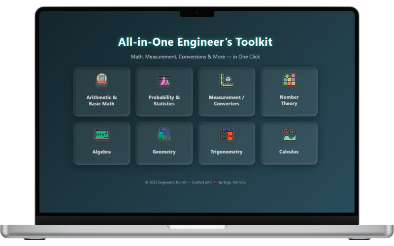
All-in-One Engineer's Toolkit Calculator
The All-in-One Engineer’s Toolkit is a powerful digital platform that combines 91 advanced calculators in one easy-to-use solution. Designed for students, educators, engineers, and professionals, it eliminates the need for multiple apps or references—helping you work faster, solve problems with confidence, and focus on what matters most. From basic arithmetic to advanced topics like calculus, trigonometry, statistics, geometry, and probability, it offers specialized solvers for derivatives, integrals, limits, series expansions, and unit conversions. This toolkit is your complete problem-solving companion—saving time, boosting accuracy, and simplifying even the toughest challenges.
Built entirely with HTML, CSS, and JavaScript, it runs seamlessly in the browser without requiring any external software.
Explore the calculator by clicking the button below and experience engineering made simple.
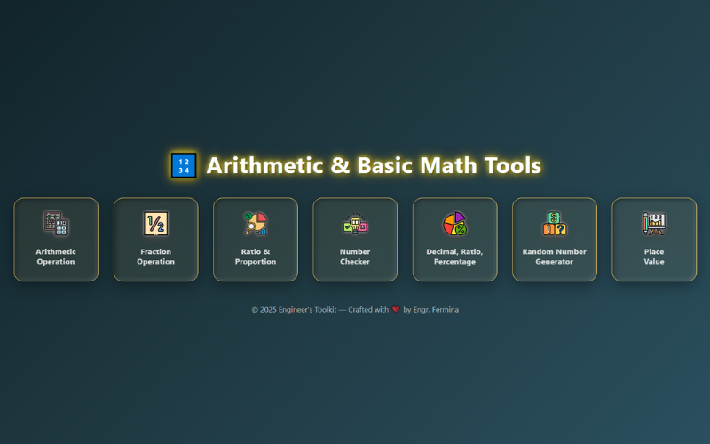
Arithmetic & Basic Math
Master the numbers—solve operations, handle fractions, explore ratios, check properties, and switch seamlessly between decimals, percentages, and ratios.
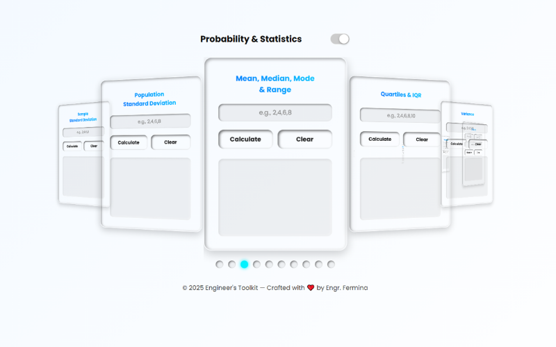
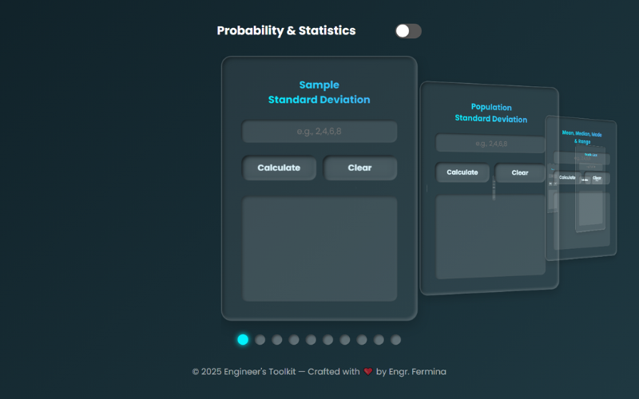
Probability & Statistics
An statistics calculator—solve for standard deviation, mean, median, mode, quartiles, variance, Z-scores, coefficient of variation, probability, combinations, permutations, and expected value in seconds.
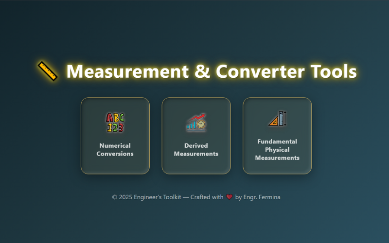
Measurement & Converter
Convert anything in seconds—decimals, fractions, Arabic and Roman numerals, plus units of speed, area, angle, time, temperature, length, weight, and volume.
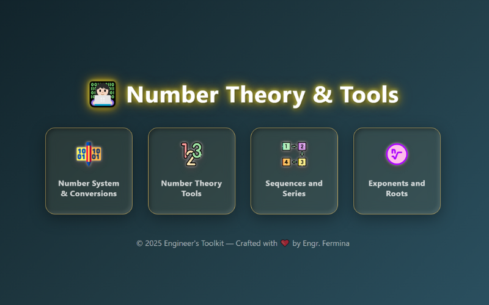
Number Theory Tools
A powerful number theory calculator— convert bases, test primes, factor numbers, find GCD/LCM, generate arithmetic & geometric sequences, and calculate exponents, powers, and roots with ease.
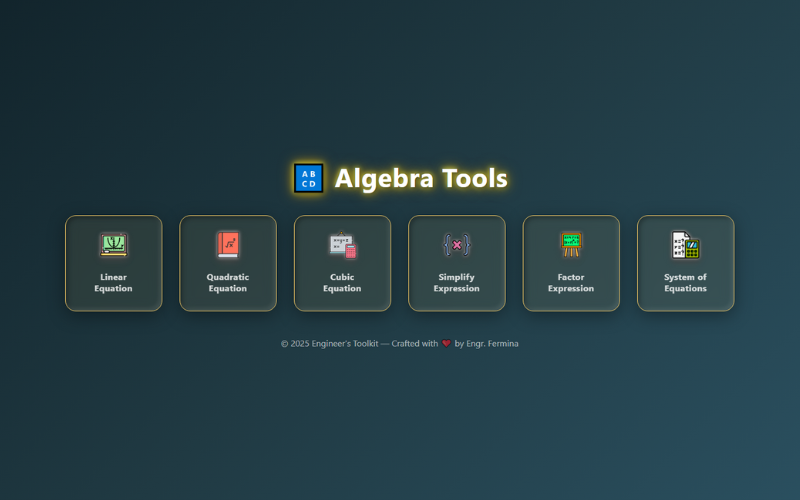
Algebra
An algebra calculator that solves and simplifies equations, factors expressions, and handles linear, quadratic, and cubic systems with ease.
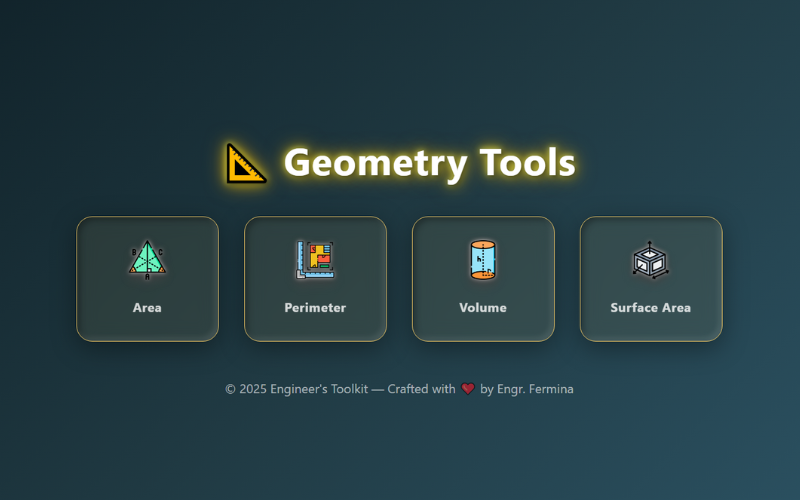
Geometry
35 geometry calculators—instantly find area, perimeter, volume, surface area, and unknown dimensions for a wide range of 2D and 3D shapes.
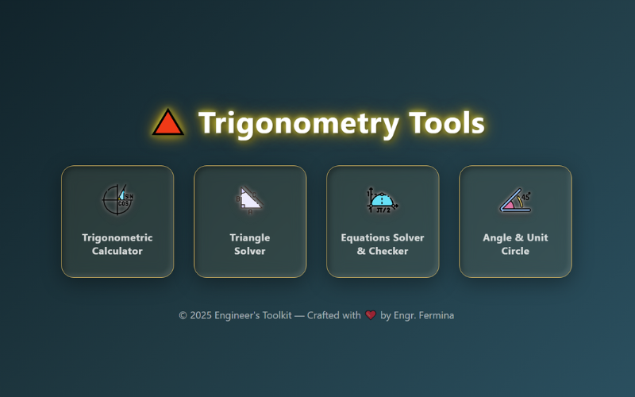
Trigonometry
A complete trigonometry calculator—evaluate functions, solve triangles, convert angles, and verify identities with ease.
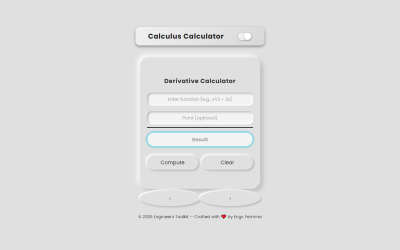
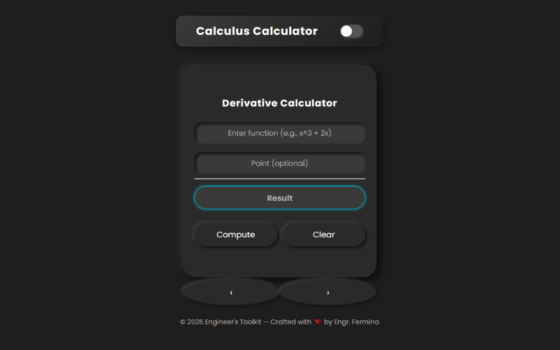
Calculus
An advanced calculus calculator—perform derivative calculations, evaluate definite and indefinite integrals, check left- and right-hand limits, expand Taylor and Maclaurin series to any order.
My Skills
Python
JavaScript
HTML5
CSS3
Automation
GitHub
Certificates

Get in Touch